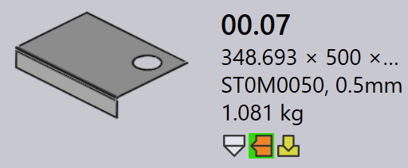

tooling 狀態
在 TruSmartCAM 中，每個零件圖磚都會以視覺化方式指出該零件在所有可用機床上的 tooling 狀態。這有助於使用者快速查看零件已為哪些機床進行 tooling，以及 tooling 是否就緒、需要檢閱或遺失。
-
tooling 狀態會使用圖示和顏色指示器直接顯示在零件圖磚上。
-
每個圖示代表一種機床技術 (例如 Bend、Laser)。
-
圖示的顏色指出該機床目前的 tooling 狀態。
下表說明每個圖示和顏色的意義，協助使用者準確地解讀 tooling 狀態。

| 機床圖示 | 說明 |
|---|---|
|
雷射切割機 |
|
折床 |
|
折邊機 |
| tooling 狀態 | 說明 |
|---|---|
|
tooling 正常 |
|
tooling 有警告 |
|
tooling 有錯誤 |
|
tooling 無法使用 |
tooling 錯誤
CAM (電腦輔助製造) 錯誤發生在 tooling 或製造準備階段。這些錯誤是由於刀具 碰撞、缺少 tooling 或無效的切割條件等問題而產生。
下列影像顯示 tooling 期間可能在零件圖磚上顯示的 tooling 錯誤狀態範例。以下各節 說明每個 tooling 錯誤及其原因。

折彎 tooling 錯誤
-
Collisions detected 和 Gripper error ：折彎設定在模擬期間造成刀具或夾爪碰撞。
-
Tool Overload 和 Narrow flange or hole too close ： 折彎刀具超載，或孔洞位於太靠近折彎線的位置，這可能會損壞零件或刀具。
-
Needs review 和 Short Punch/Die span ：tooling 設定需要手動 檢查，或所選的模具/沖頭跨距小於零件所需的跨距。
-
Tool Missing、Poor backguage 或 Part too big for this machine ：所需的折彎刀具 無法使用、背規未正確設定，或零件對於所選機床而言太大。
切割 tooling 錯誤
-
Missing cutting condition ：原材料未對應切割條件， 因此無法執行切割。
-
Untooled or partially tooled contours ：在 tooling 過程中 遺漏了某些形狀或邊緣，或僅部分涵蓋，導致零件的切割不完整。